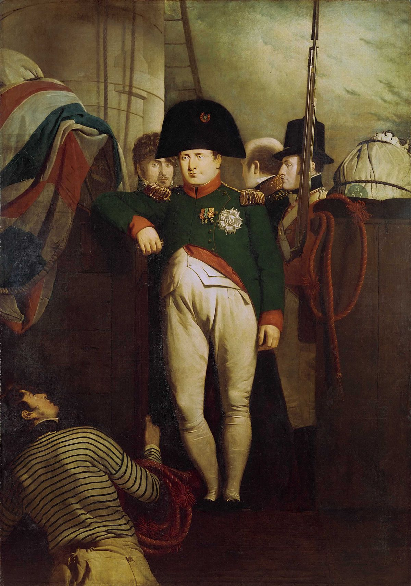

Napoleon Bonaparte terkenal karena memimpin Prancis dalam serangkaian perang dan pertempuran besar yang mendefinisikan era Perang Revolusi dan Perang Napoleon. Kemenangan terbesarnya sering dianggap terjadi dalam Pertempuran Austerlitz (1805), di mana ia secara ahli mengalahkan pasukan gabungan Austria dan Rusia dalam "Pertempuran Tiga Kaisar", sebuah mahakarya taktik militer. Kemenangan penting lainnya termasuk Jena-Auerstedt (1806) yang melumpuhkan Prusia, dan Wagram (1809) yang mengamankan dominasi Prancis atas Austria. Meskipun Napoleon jarang terkalahkan di darat pada puncak kekuasaannya, Pertempuran Trafalgar (1805) menjadi kekalahan laut yang menentukan bagi armada gabungan Prancis-Spanyol oleh Angkatan Laut Inggris, menghentikan rencana invasi ke Britania Raya.
Titik balik kekuasaan Napoleon ditandai oleh dua bencana militer besar. Invasi Prancis ke Rusia pada tahun 1812 berakhir dengan kehancuran total pasukannya akibat musim dingin yang parah dan perlawanan Rusia, yang melemahkan kekuatan militernya secara signifikan. Kelemahan ini dieksploitasi oleh Koalisi Keenam dalam Pertempuran Leipzig (1813), atau "Pertempuran Bangsa-Bangsa", di mana ia menderita kekalahan besar pertamanya dalam skala penuh. Akhirnya, setelah kembali dari pengasingan singkatnya, karier militer Napoleon berakhir secara definitif di Pertempuran Waterloo (1815), di mana pasukan Inggris dan Prusia bersatu untuk mengalahkannya sekali dan untuk selamanya.